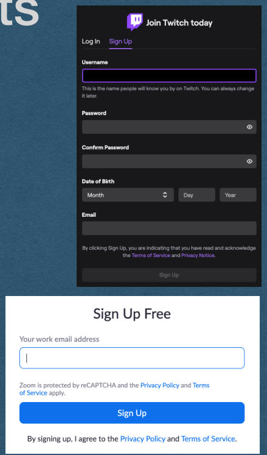
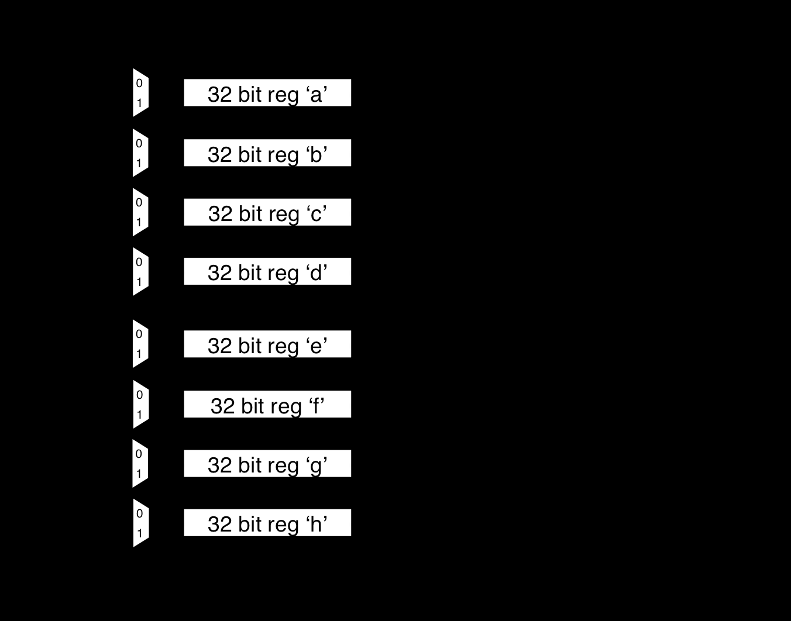

Authentication and Secure Password Storage
CSE312 — Web Development
Authentication
User Accounts
- Everything we've built so far treats every user the same and delivers the same content to all visitors
- Only exception was setting a cookie to count visits
- For many features of a web app we want to remember a user across multiple visits and verify their identity
User Accounts
- Registration
- Users can create an account on your app
- Choose a username and password
- Authentication
- Verify that a user is [likely] a registered account holder by providing their username/password
- Log them into your app
- Serve content specific to them
User Accounts
- Registration
- Can be a simple web form
- At a minimum, provide a username and password
- Common to affiliate an account with a valid email address
- And verify that email
- Limits the number of bots that register

Authentication
- On the server
- Store each username/password in a database
- This data must persist so the users can log in even after a server restart
- What if this database is compromised?
- Perhaps by a SQL injection attack
Authentication
- NEVER store passwords as plain text
- Not even the admins of a website should know the passwords of their users
- We do this by hashing the passwords and storing only the hashes
Hash Function
- A function that converts one value into another with certain properties
- Typically a fixed length value
- Used to build hash tables
- Among other applications
- Hash functions might not add any security!
Cryptographic Hash Function
- A hash function that is meant for secure purposes
- Goal of being a one-way function
- Easy to compute a hash value from plain text
- Very difficult to compute the plain text of a given hash
- Hashes can be shared without compromising the plain text
password
5e884898da28047151d0e56f8dc6292773603d0d6aabbdd62a11ef721d1542d8
Cryptographic Hash Function
- Only a cryptographic hash of your password is stored
- By only storing the hash of a password:
- Even the admins of a site can't read your password!
- SHA256 is a commonly used cryptographic hash function
- https://www.xorbin.com/tools/sha256-hash-calculator
SHA256
- Runs input through multiple rounds of bit-level manipulation
- Easy (Fast) to compute
- Very difficult to compute in reverse
Ref: opencores.org

Brute Force Attack
- Storing SHA256 hashes is not always secure!
- Surprisingly common misconception
- Hashes are easy to compute, but hard to reverse
- To attack a hash:
- Hash every possible password
- If the hashes match, you know the password
Entropy
- Entropy is a measure of uncertainty
- Number of guesses required to guarantee a hash is matched
- Examples:
- If you know the plain text is a single lowercase letter the entropy is 26
- If it's two lowercase letters, the entropy is 26^2 = 676
- If it's two letters that can be upper or lower case, 52^2 = 2704
- Tend to measure the "bits of entropy"
- The log base 2 of these values
- Typically consider >=80 bits of entropy to be secure
Dictionary Attack
- More advanced version of the brute force attack
- Use common words with common replacements
- a -> @
- O -> 0
- i -> !
- Real words are easier to remember
- Attackers take advantage of this
- Lists of common passwords are freely available
- Start with these
Rainbow Table
- A table containing the start and end of "chains" of hashes
- Repeatedly rehash the start to reach the end
- To attack a hash:
- Rehash until you reach the end of a chain
- Rehash the beginning of the chain to find the value before the hash
- Takes a long time to compute a large table
- Effectively trades space for time once the table is computed
Salting
- Salt hashes to prevent attacks like rainbow tables
- A salt is a randomly generated string that is stored in plain text with the hash
- The salt is appended to the plain text before hashing
- Nearly all hashes in the rainbow table will not use this salt
- The salt does not add entropy since it is stored in the clear
Authentication
- Registration
- User provides username/password
- Generate a random salt
- Append the salt to the password and compute a secure hash of this value
- Store the username/salt/hash in your database
Authentication
- Authentication
- User provides username/password
- Lookup the salt/hash for the given username
- Append the salt to the provided password and compute the SHA256 hash
- If this hash matches the stored hash, the user is verified
- If this hash does not match the stored hash, the user is not logged in
Authentication
- The bcrypt library implements hashing, salting, and other security related functions
- Available in many different languages
- It is highly recommended that you use this library in your assignment
Redirects
Redirects
- To redirect the user to a different page:
- Respond with a 300-level status code
- Ex. Redirect HTTP requests to HTTPS requests
- Ex. Respond with 301 Moved Permanently when the server is updated with new paths, redirect the old paths to the new paths instead of maintaining both
- Ex. Response with 302 Found to redirect temporarily (Avoids browsers caching the new path)
HTTP/1.1 301 Moved Permanently
Content-Length: 0
Location: /new-pathRedirects
- A redirect response must contain a Location header
- This is the path of the redirect
- The client will make a second HTTP request for the Location path and load the page with the new response
HTTP/1.1 301 Moved Permanently
Content-Length: 0
Location: /new-pathRedirects
- If the Location is not a full url, it will be treated as a relative path
- New request is made with the same protocol/host/port as the original request
- Example:
- First request was for "http://cse312.com:8080/old-path"
- Second request is "http://cse312.com:8080/new-path"
HTTP/1.1 301 Moved Permanently
Content-Length: 0
Location: /new-pathRedirects
- If the location is a full url, the user can be redirected to a different server
- Example:
- First request was for "http://cse312.com:8080/old-path"
- Second request is "https://google.com/"
HTTP/1.1 301 Moved Permanently
Content-Length: 0
Location: https://google.com/Redirects
- Add a Content-Length of 0 since there are no bytes to read from the body
- This is technically optional. The lack of a Content-Length header should imply a length of 0
- However, this confuses Firefox.. so we'll add the header
HTTP/1.1 301 Moved Permanently
Content-Length: 0
Location: /new-path